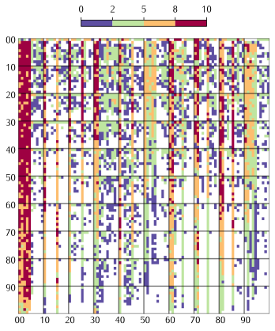
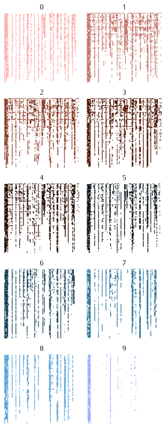

Postal codes in Poland
10 May 2026
Recently I got interested in the structure of Polish postal codes. I also wanted to find the database of all postal codes and try to visualize them. Here is my quick attempt to do it.
Structure of the postal codes
Postal codes in Poland consist of 5 digits in the following format:
XX – XXX
where XX is the region, X points at code sector and XX indicates a post office1.
Given the database of all polish postal codes with the addresses one can build the map of postal codes. This was already done and I highly recommend the Mapa kodow pocztowych for Polish postal codes. You can clearly see the geographical distinctions and some funny regions.
But here we will not worry about the maps, but rather about the way we can visualize the postal codes as just a numbers.
Visualizing postal codes
I wanted to visualize all the postal codes in one, small and coherent picture. I came up with the idea to plot the matrix 100 x 100, where on x-axis we have two first numbers of a postal code and on the y-axis we have last two numbers. By this we keep the natural structure of the postal codes intact. The problem is with the 3rd number which does not have really any meaning. So I did two plots.
3rd number sum
First let's take a look at the codes of the form XX-☐YY, where XX are plotted on the x-axis and YY on the y-axis. The color indicates the number of postal. Color of each cell corresponds to the number of postal codes with this beginning and end.

We obtain interesting plot; lets try to explain what do we see. First, the dark big patch on the left is Warsaw and neighbor cities. Since it is highly populated area we see that almost all possible codes are used.
Secondly, every 5 cells we see rather dark vertical strip. It means that this code belongs to a bigger city or a bigger region. Bigger strips can be seen at 30 (Kraków), 50 (Wrocław), 70 (Szczecin), 60 (Poznań), 70 (Szczecin), 80 (Gdańsk) and 90 (Łódź). What is interesting is that most of the cities use 2 stripes except Wrocław and Łódź, which uses 5, similarly to Warsaw. It make sense since those three make up the biggest cities in the country. It also means that the postal codes are not that densely packed in those cities, meaning that there is some room to squeeze a postal number with different 3rd number.
Third, we can see regions where people are more spread. There are many cells with 1 or 2 postal codes between 30-50, which are Lower Poland and Silesia. Similar (but less) can be said about 90-100 (Central Poland). There is much more villages so it means more than average post offices with different postal codes.
3rd number separate
Now let's take a look at the same plot but for each 3rd digit separately. We use different colors to help the viewer to distinguish them.

Once again, few observations:
- We see horizontal stripes for lower numbers. It means that small post offices outside the big cities like to use round last two digits together with low 3rd digit
- Number 7,8 and 9 are non-present in Lower Silesia (around 50 on x-axis).
- Number 9 is almost exclusively for Warsaw and Kraków 2
To summarize, this is short post about ideas how to visualize all the postal codes in on graph. It does not show anything new, it is rather a fun exercise and solely for art reasons.
Footnotes
-
Indeed, the Wikipedia says that number 9 is reserved for special places in those two cities. ↩